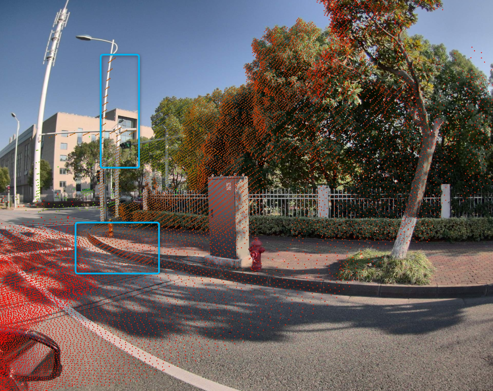

Lidar Calib Guideline
Step1. Data collection
Calibration data collection
After stopping the vehicle to the specified position, the calibration data (camera+lidar) is collected after the calibration.Verify data collection
Collect LIDAR data outdoors to verify the calibration results, Make at least 3 sets of verification data for each calibration Select the right location to keep the vehicle static, and avoid dynamic objects with more surrounding environments as much as possible. Verifying data contains the data of objects such as light rods, traffic signals, signal signs, etc.
Example:original
projected
Note: In order to ensure the synchronization of data, the collection time interval of calibration data and verification data should not exceed two days
Step2. Parameter calibration
Calibration data structure
Taking the data collected on September 19, 2022 as an example of the 9884C (engineering vehicle No. 2) as an example, please store the data according to the following level structure:
The correspondence between file name and lidar:
main → Ruby 360 ° 128 Line lidar
front → M1 front
right → M1 right
left → M1 leftCalibration tool 1
At the same time, calibrate all lidarlidar (multi_lidar_calib). See Readme for specific usage methods
V1.2.0 has begun to add the function of quality inspection and noise filtering for M1 calibration data. At present, it is only applicable to calibration tool 1. For details, please refer to: M1 lidar calibrationCalibration tool 2
Single_lidar_calib)
Suitable for calibrating a single LIDAR, see ReadmeExternal parameter format
After the calibration is completed, the T_W_L matrix will be provided, which represents the position of the laser coordinate system when the calibration system ( After the positioning of the positioning device is in place, it will be changed to the car body coordinate system ), The correspondence between matrix and lidar is as follows:T_x_l0: main
T_x_l1: m1 front
T_x_l2: m1 left
T_x_l3: m1 right
T_x_l4: bp01
T_x_l5: bp02
T_x_l6: he01
T_x_l7: he02
T_x_l8: he03
T_x_l9: he04
T_x_l10: he05
T_x_l11: qt128_front
T_x_l12: qt128_right
T_x_l13: qt128_rear
T_x_l14: qt128_leftError code
After the calibration is completed, check the error code in the call_log.txt to confirm the calibration
NO_ERROR // Normal calibration
LARGE_DEVIATION // The calibration result and design value exceed the threshold
CALIB_DATA_NOT_FOUND // No valid calibration data is found
CALIB_DATA_INTRINSIC_ERROR // There is a problem with LIDAR's internal parameters (RS M1 Lidar has the problem of incoming five sectors, if the difference will affect the calibration accuracy)
Note: It is recommended to use Calibration Tool 1, no need to enter too much instructions.Convenient and efficient.When Step3 is verified, if a certain lidar external parameter result is not timely, use Calibration Tool 2 to calibrate the specified LIDAR.
Step3. Result verification
Quantitative indicators
After the calibration is completed, you can view the data in the Calib_log.txt. To a certain extent, you can reflect the accuracy of the calibration data ( Can't be used as an absolute reference )
inlier_rmse : The balance of the matching point, the smaller the better.Unless the results are poor, it will not be higher than 0.5 under normal circumstancesProjection diagram (main verification method)
Use the projection tool (Link) to combine the inside and outside of the camera and the external parameters of Lidar.Project the point cloud data on the image, and judge the effect of lidar external parameter calibration based on the degree of matchingOriginal
Good case
Bad case
Comment

Dianyun is obviously high
For Main lidar
Mainly Pay Attention to Street Light Poles, traffic signal sign, street signs, trunk, fences nearby, and the projection of the distribution box can be achieved 95% The above area reunite
Focus on the projection of five cameras: Front_wide/Front_Right_RONT_LEAT_LEAR_LEFT/Rear_right/Rear
front_wide:
front_right:
front_left:
rear_right:
rear_left:
rear:
For M1Mainly Pay Attention to Street Light Poles, traffic signal sign, street signs, trunk, fences nearby, and the projection of the distribution box can be achieved 90% The above area reunite
Focus on the projection of five cameras: front_wide/front_right_right_left_left
front_wide
front_right
front_left
For filling blind lidarMainly pay attention to street light poles, Road along the road Can the projection of 95%of the regional re -coincidence

reference : Determine description